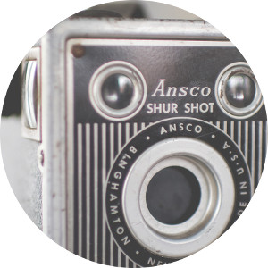

Tipr 3.1
Tipr
is a small and simple jQuery tooltip plugin. It works on almost any element, and it's free and open source.
Demos
For a demo, mouseover the Latin text below.
Odio nostrud
De finibus bonorum et malorum
Ars Amatoria
Fully documented
There's full and comprehensive
documentation
.
© 2017, Tipue. Made in London.